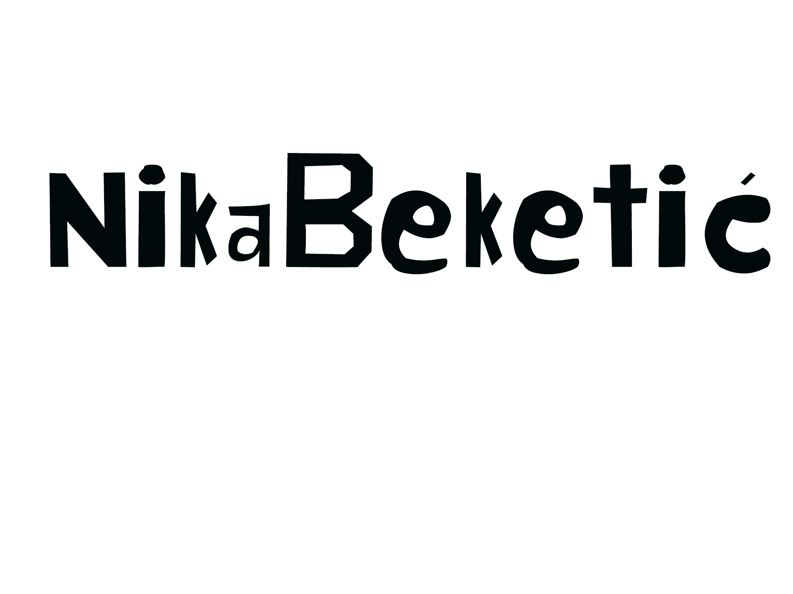
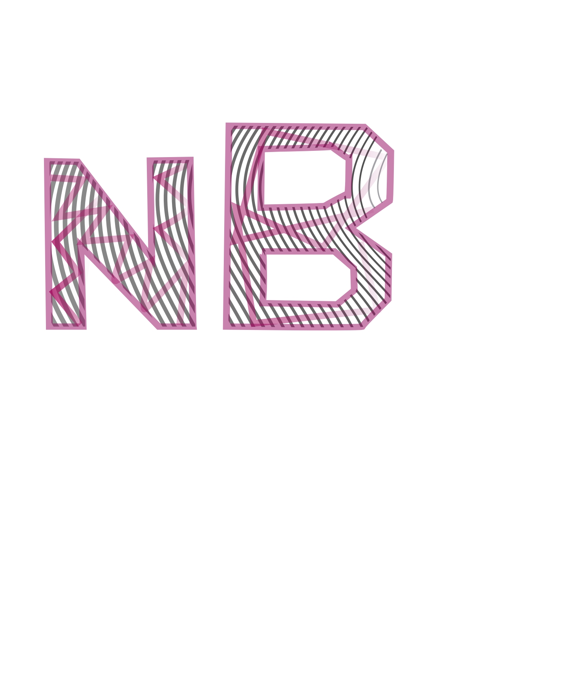
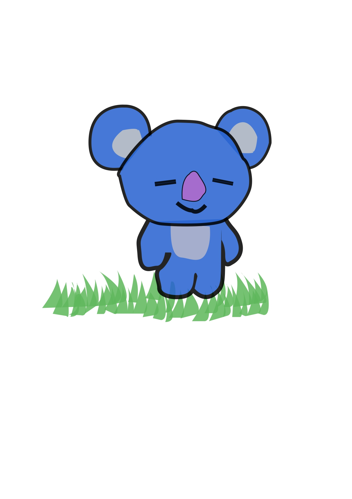
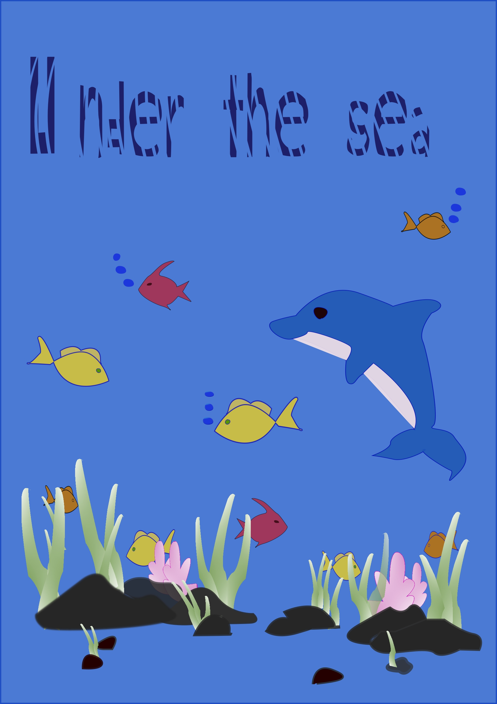
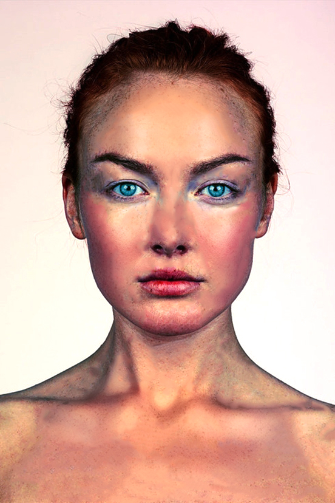
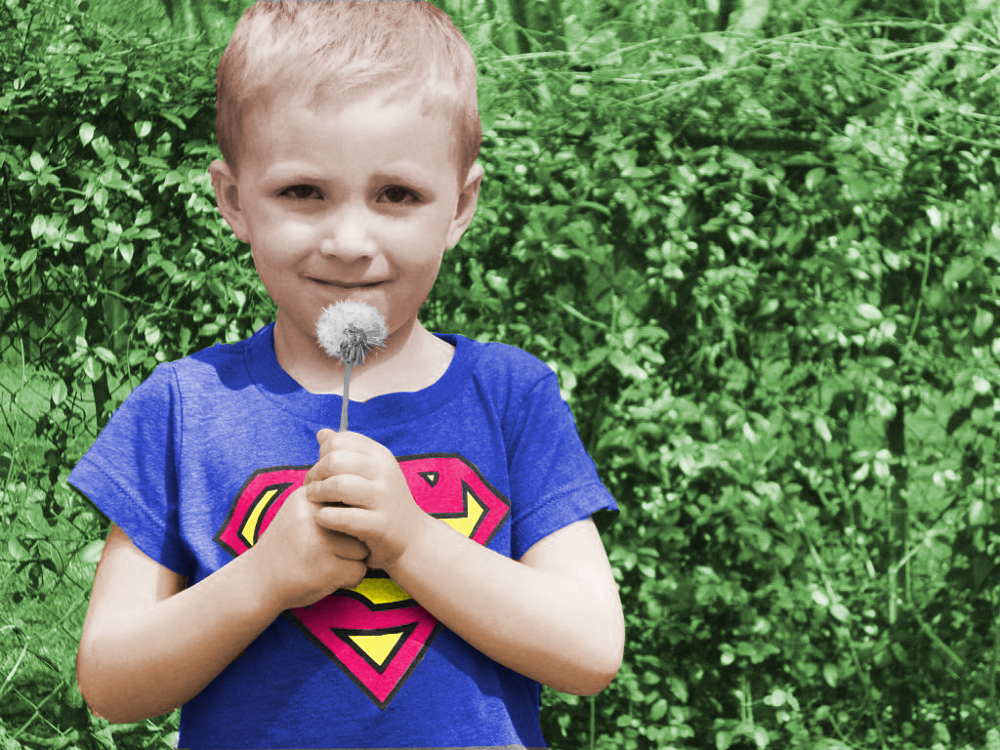
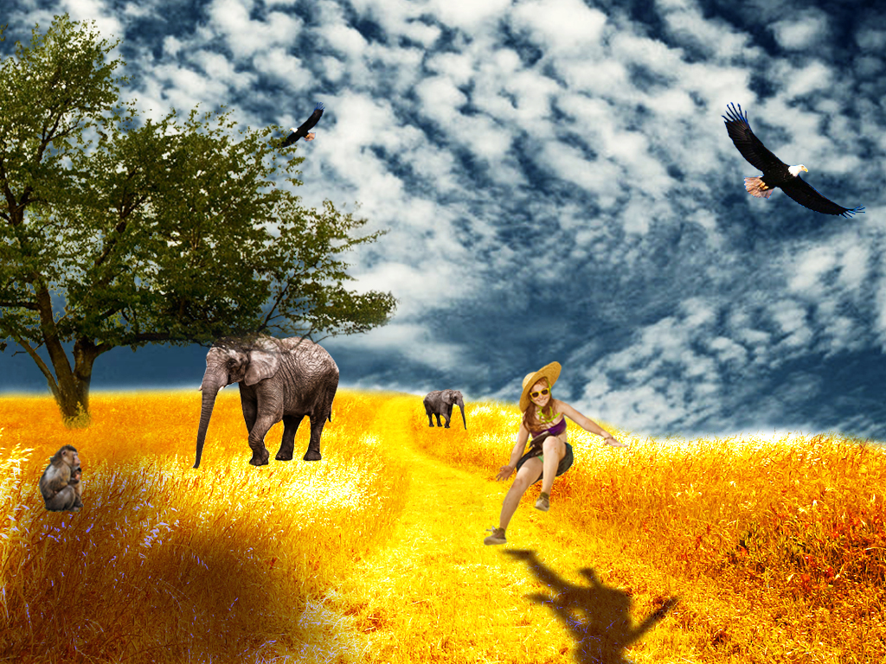
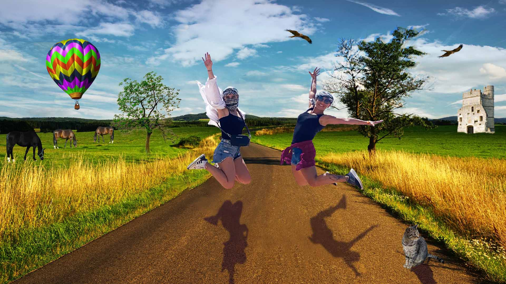

Prve vježbe koje smo radili su bile na temu vektorska grafika. Radila sam ih u programima FontForge i Inscape. Ovdje možete vidjeti moje vježbe te nakraju i projektni zadatak.    
Zatim smo radili u Photoshopu u kojem smo naučili kako retruširati, kolorirati i fotomontirati slike. U nastavku su slike vježbi te projektnogzadatka.    
Također smo radili obradu videa gdje smo mogli birati između nekoliko video editora. Ja sam odlučila raditi u Shotcut-u. U nastavku možete pogledati video koji smo uredili.